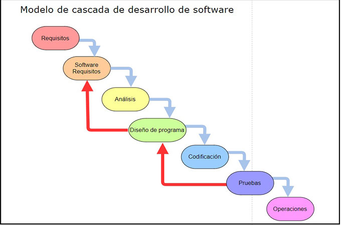

¿Que es la Metodologia en Casacada?
Se caracteriza por ofrecer un proyecto bien estructurado y de robusta documentación,
permite una definición precisa de los requerimientos del proyecto también, es ideal
para proyectos pequeños y con objetivos simples

Caracteristicas
Los proyectos complejos son imposibles de fragmentar es estricta
frente a cualquier tipo de cambio o modificación. Los errores en el
proyecto suelen detectarse hasta el final del proceso
Ventajas
La cascada se basa en que los equipos sigan una secuencia de pasos
y nunca avancen hasta que se haya completado la fase anterior
Esta estructura es apta para proyectos más pequeños con entregables
que son fáciles de definir desde el inicio
Desventajas
Se basa completamente en seguir una serie de pasos que hacen que los equipos siempre avancen
Excluye al cliente o al usuario final
Retrasa las pruebas hasta después de la finalización